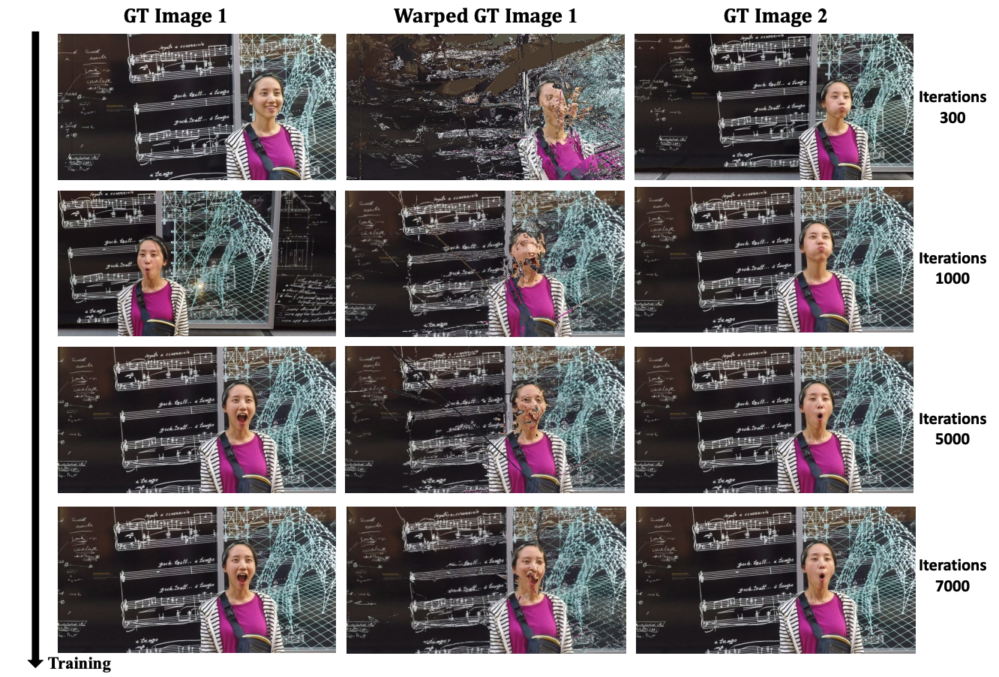

Visualization of our self-supervised flow matching progress across training iterations,
using the DynamicFace sequence from the Nvidia Monocular dataset. Each row shows results at different training iterations:
300 (top row), 1000 (second row), 5000 (third row), and 7000 (bottom row). The columns present:
Left column (I1): Ground truth image at time t1.
Middle column (I1warped): Ground truth image from t1 warped using our predicted flow field F,
demonstrating how content transforms to match the target frame. Right column (I2): Ground truth image at
time t2, serving as the reference for evaluating warping accuracy. As training progresses, I1warped
increasingly aligns with I2, demonstrating that our self-supervised flow matching effectively learns to model dynamic scene
motion without requiring external motion priors.